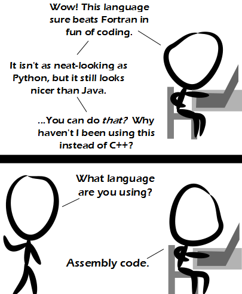

Comic JK 842
When I Feel Like It
⇤
<
?
>
⇥

⇤
<
?
>
⇥
Forum
.
RSS
.
Digg
.
Facebook
.
Reddit
.
Twitter
.
Stumbleupon
Enter your thoughts on number 842 here. Please, no spamming, trolling, phreaking, Assembly, or invalid stack pointers. Ha! ...agree on all points. >Agree on most - it looks far better than Python! Have fun re-writing all of your code when you upgrade your hardware. > Or when you decide to port it to another platform, or even just another OS. >>Cross-compiled Assembly? >>Hey! What if we used a language that could be translated into the various versions of assembly? >>>C-- >>> Maybe we should call it C. >>>>You have to rewrite your C anyway for all but the simplest programs. >>>>> If you actually believe this you're doing it wrong. It may be news to you that Linux is mostly the same C code and runs on many different CPUs. >>>>>> x86 assembly runs on any computer you'd care to use; the difference is the operating system - just try running your threaded C program on Windows >>>>>>> Except any phone or tablet or the PS3 or ... >>>>>>> There are always portable ways of doing things, particularly with C++, eg, boost::thread. "Assembly Code" was when you stomped on the bleachers to drown out the principal. The guy on the right has a huge bump on the back of his head. Is it a tumor? > It's contagious. UNCLEAN. >> no. He just bumped his head on the ground at some point. He'll be fine in a few days. In the meantime, he is programming with his leopard i meant leopard. CAPS LOCK RAGE: DESTROY THE XKCD THEMED AUTOCORRECT!!!